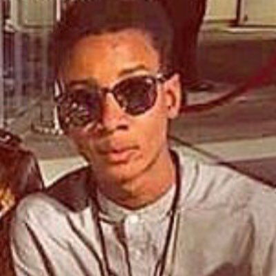

My name is Noah Oluyide.
I reside in Los Angeles, CA. Being raised in Lagos, Nigeria an Environment intact with respect, hardworking and discipline has structured me into who I am today. Ever since my childhood I've been ambitious about doing entertainment such as; acting, directing, producing, hosting as well as becoming a philanthropist. "Believing something can be done when you truly believe all of your heart and mind that something can be done, your mind will find ways to do it. Don't just dream about it, make it happen". My vision in acting is to use drama through talent, inspiration, developing characters, extended acting skills and constructing imaginative stagings of scenes.Having the opportunity to learn end elevate my mind to be wiser and knowledgeable is a blessing that most people don't attempt to adopt. Since 7th grade I've been acting in short films / student films, presenting presentations and giving back to the homeless in Downtown Los Angeles.
